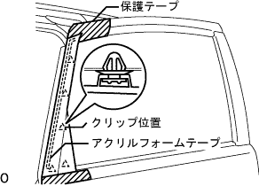
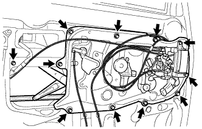
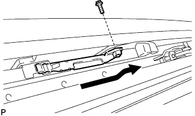

スライドドア 取り外し |
| 1. バッテリーマイナスターミナル切り離し |
| 2. リヤドア ウインドウ フレーム モールディング FR LH取りはずし |
|  |
スライドドアパネルに保護テープを貼る。
アクリルフォームテープの接合部およびクリップ5箇所のかん合をはずし、リヤドア ウインドウ フレーム モールディング FR LHを取りはずす。
| 3. リヤドア ウインドウ フレーム モールディング RR LH取りはずし |
 |
スライドドアパネルに保護テープを貼る。
アクリルフォームテープの接合部およびクリップ４箇所のかん合をはずし、リヤドア ウインドウ フレーム モールディング RR LHを取りはずす。
| 4. フロントドアスカッフ プレート LH取りはずし |
 |
手で上方に引きながら、車両後方からクリップおよびツメのかん合をはずし、フロントドアスカッフプレートLHを取りはずす。
| 5. デッキサイドトリム カバー FR LH取りはずし |
 |
手で車両前方に引きながらクリップおよびツメのかん合をはずし、デッキサイドトリムカバーFR LHを取りはずす。
| 6. マルチプレックス ネットワーク スイッチASSY取りはずし |
保護テープを貼ったマイナスドライバーを使用してツメ2箇所のかん合をはずす。
コネクタを切り離し、フロントアームレストベースパネルUPR LHとともにマルチプレックス ネットワーク スイッチASSYを取りはずす。
ツメ2箇所のかん合をはずし、フロントアームレストベースパネルUPR LHからマルチプレックス ネットワーク スイッチASSYを切り離す。
| 7. ドアフレーム ガーニッシュ LH取りはずし |
 |
クリップ2箇所のかん合をはずし、ドアフレームガーニッシュLHを取りはずす。
| 8. フロントドアトリム ボードSUB-ASSY LH取りはずし |
スクリューを取りはずす。
クリップ11箇所のかん合をはずし、フロントドア トリムボード LHを取りはずす。
| 9. フロントドアガラス ウエザストリップ INN LH取りはずし |
ツメ9箇所のかん合をはずし、フロントドア トリムボード LHよりフロントドア ガラス ウェザストリップ INN LHを取りはずす。
| 10. フロントドアガラスアウタウエザストリップ クリップ取りはずし |
 |
フロントドア ガラス アウタウェザストリップ クリップに沿ってドアパネル側に保護テープを貼る。
ルーフモールディングリムーバを使用して、ツメのかん合をはずし、スライドドアガラスウエザストリップASSY OUT LHを取りはずす。
| 11. フロントドア ワイヤ LH取りはずし（スマートキーなし） |
 |
各コネクタおよび各クランプを切り離す。
 |
ボルトをはずし、アースクランプを切り離す。
回転クランプ部のボルトをはずす。
ボルト5本を取りはずす。
クリップリムーバーを使用してクリップ2箇所のかん合をはずし、フロントドア ワイヤ LHを取りはずす。
| 12. フロントドア ワイヤ LH取りはずし（スマートキーあり） |
 |
コネクタおよび各クランプを切り離す。
|
ボルトをはずし、アースクランプを切り離す。
回転クランプ部のボルトをはずす。
ボルト5本を取りはずす。
クリップリムーバーを使用してクリップ2箇所のかん合をはずし、フロントドア ワイヤ LHを取りはずす。
| 13. スライドドア サービスホールカバー取りはずし |
| 14. スライドドア ガラス ラン NO.1 LH取りはずし |
| 15. スライドドア ウインドウ ガイド, FR LH取りはずし |
 |
ナット2個、ボルト1本をはずし、スライドドア ウインドウ ガイド, FR LHを取りはずす。
| 16. スライドドア ガラス NO.1 LH取りはずし |
プラグホールを取りはずす。
フロントドア ワイヤ LH、マルチプレックス ネットワーク スイッチASSYおよびバッテリーマイナスターミナルを接続し、スライドドア ガラス NO.1 LHを図の位置(取り付けボルトが見える位置)に動かす。
フロントドア ワイヤ LH、マルチプレックス ネットワーク スイッチASSYおよびバッテリーマイナスターミナルを切り離す。
ボルト2本を取りはずし、スライドドア ガラス NO.1 LHを室外側へ抜き出し取りはずす。
| 17. ドア コントロール リレー取りはずし |
 |
スクリュ2本をはずし、ドアコントロールリレーを取りはずす。
| 18. ドアエレクトリカルキー オシレータ取りはずし（スマートキーあり） |
 |
クランプを切り離す。
ボルト2本をはずし、ドアエレクトリカルオシレータキーを取りはずす。
| 19. モジュールASSY取りはずし（スマートキーなし） |
|  |
各ケーブルを切り離す。
ボルト11本をはずし、モジュールASSYを取りはずす。
| 20. モジュールASSY取りはずし（スマートキーあり） |
各ケーブルを切り離す。
ボルト9本をはずし、モジュールASSYを取りはずす。
| 21. パワーウインドウレギュレータ モータASSY LH取りはずし |
 |
トルクスソケットレンチ(T25)を使用してスクリュー3本をはずし、パワーウインドウ レギュレータ モータASSY LHをモジュールASSYから取りはずす。
| 22. スライドドア ハーフ ストップ コントロール レバー LH取りはずし |
マイナスドライバーを使いツメのかん合をはずし、スライドドア ハーフ ストップ コントロール レバー LHをモジュールASSYから取りはずす。
| 23. フロントドアウインドウ レギュレータSUB-ASSY LH取りはずし |
 |
ボルト2本をはずし、フロントドア ウインドウ レギュレータ LHをモジュールASSYから取りはずす。
| 24. オートマチックドア レギュレータモータASSY取りはずし |
 |
スクリュ3本を取りはずす。
出力レバーを切り離し、オートマチックドア レギュレータモータASSYをモジュールASSYから取りはずす。
| 25. フロントドアインサイド ハンドルSUB-ASSY LH取りはずし |
ボルト2本を取りはずす。
リンク2本を切り離し、フロントドアインサイドハンドル LHをモジュールASSYから取りはずす。
| 26. フロントドアロック アクチュエータASSY LH取りはずし |
 |
スクリュ3本をはずし、フロントドア ロック アクチュエータ ASSY LHをモジュールASSYから取りはずす。
| 27. フロントドアロックリモート コントロールASSY LH取りはずし |
ボルト3本および、コネクタクランプをはずし、フロントドア ロック リモートコントロールASSY LHをモジュールASSYから取りはずす。
| 28. フロントドアスティフナ クッション NO.2取りはずし |
ボルトをはずし、フロントドア スチフナ コーション NO.2をとりはずす。
| 29. パワースライドドア ロックASSY NO.1 LH取りはずし |
ケーブルのクランプ3箇所を切り離す。
ボルト1本を取りはずす。
トルクスソケットレンチ(T30)でスクリュ3本をはずし、パワースライドドア ロックASSY NO.1 LHを室内側へ取りはずす。
| 30. パワー スライドドア センサーASSY LH取りはずし |
ケーブルのクランプを取りはずす。
 |
スクリュ5本、クリップ2個を取りはずし、パワー スライドドア センサーASSY LHを取りはずす。
| 31. スライドドア フルオープンストップ ロックASSY NO.1 LH取りはずし |
 |
ボルト2本を取りはずす。
ケーブルを切り離し、スライドドア フルオープンストップ ロックASSY NO.1 LHを取りはずす。
| 32. スライドドア ロックASSY FR LH取りはずし |
 |
トルクスソケットレンチ(T30)を使用して、スクリュー4本を取りはずす。
ボルトをはずし、スライドドア ロックASSY FR LHを取りはずす。
クランプを切り離す。(スマートキーあり)
| 33. スライドドア フロントロック フックASSY取りはずし |
ボルト4本をはずし、スライドドア フロントロック フックASSYを取りはずす。
| 34. スライドドア ダウンヒーメル ストッパ取りはずし |
ボルト2本をはずし、スライドドア ダウンヒーメル ストッパを取りはずす。
| 35. スライドドアセンタレール カバー LH取りはずし |
 |
クリップ6個のかん合をはずし、スライドドア センタ レール カバー LHを取りはずす。
| 36. スライドドア モータASSY NO.1取りはずし |
テンショナー（オープン側およびクローズ側）をブラケットから取りはずす。
 |
ボルト2本をはずしドリブンプレートを取りはずす。
ボルト6本をはずし、スライドドア モータASSY NO.1を取りはずす。
| 37. フロントドアアウトサイドハンドル カバー LH取りはずし |
プラグホールを取りはずす。
トルクスソケットレンチ(T30)を使用してスクリューをはずし、フロントドア アウトサイドハンドル カバー LHを取りはずす。
| 38. フロントドアアウトサイド ハンドルASSY LH取りはずし（スマートキーなし） |
フロントドア アウトサイドハンドルASSY LHを車両外側へ引き、前方へスライドさせ、フロントドア アウトサイドハンドルASSY LHを取りはずす。
 |
フロントドアアウトサイドハンドルパッドLHおよびリヤフロントドアアウトサイドハンドルパッドRRを取りはずす。
| 39. フロントドアアウトサイド ハンドルASSY LH取りはずし（スマートキーあり） |
コネクターを切り離す。
フロントドア アウトサイドハンドルASSY LHを車両外側へ引き、前方へスライドさせ、ワイヤハーネスを引き出しながらフロントドア アウトサイドハンドルASSY LHを取りはずす。
フロントドアアウトサイドハンドルパッドLHおよびリヤフロントドアアウトサイドハンドルパッドRRを取りはずす。
| 40. フロントドア アウトサイドハンドル LH取りはずし |
トルクスソケットレンチ(T30)を使用してスクリューをはずし、フロントドア アウトサイドハンドル LHを車両前方へスライドさせ取りはずす。
| 41. エレクトリカルキーワイヤ ハーネス取りはずし（スマートキーあり） |
 |
クランプをはずし、フロントドアアウトサイドハンドルLHよりエレクトリカルキーワイヤハーネスを取りはずす。
| 42. スライドドアアッパレール クッション LH取りはずし |
| 43. スライドドアロワーレール プレート LH取りはずし |
|  |
ボルト1本をはずし、スライドドアロワーレールプレートLHを取りはずす。
| 44. スライドドア LH取りはずし |
スライドドア ローラASSY LWR LH部をスライドドアレールLWRの切り欠き部から抜き出す。
スライドドアローラASSY UPR LHをスライドドアレールUPRの後方切り欠き部から抜き出す。
スライドドア LHを後方に移動させ、スライドドア ヒンジASSY CTR LHをスライドドアレールCTR LHから抜き出し、スライドドア LHを取りはずす。
| 45. スライドドア ヒンジASSY CTR LH取りはずし |
ボルト３本をはずし、スライドドアヒンジASSY ＣＴＲ LHをスライドドアパネルより切り離す。
| 46. スライドドア ローラASSY UPR LH取りはずし |
ボルト２本をはずし、スライドドアローラASSY UPR LHを取りはずす。
| 47. スライドドア ローラASSY LWR LH取りはずし |
ボルト3本をはずし、スライドドアローラASSY LWR LH を取りはずす。